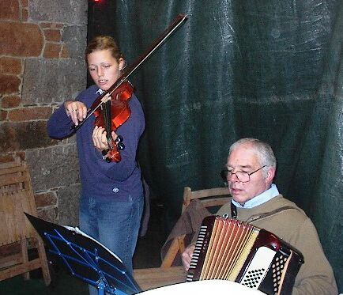
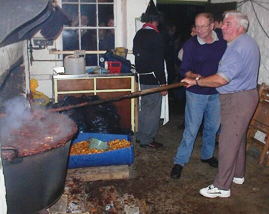
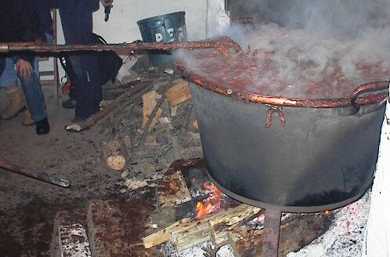
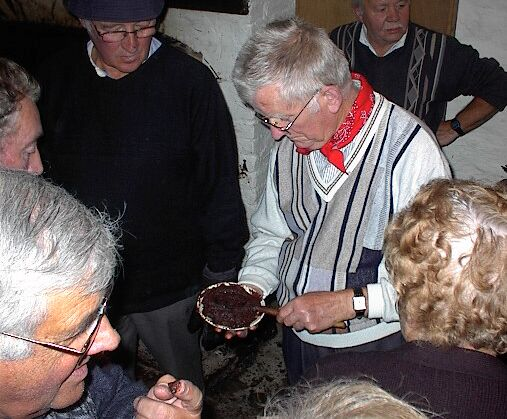
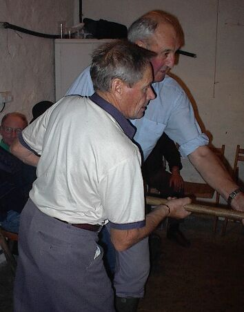
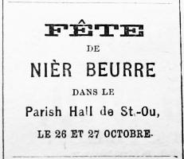

|  |  |  |  |  |
 |
La preumié chose a faithe quand nou's a décidé d'faithe du nier-beurre, ch'est d'emprunté eunne pêle. Tant qu'a, eunne neuve, car si s'adounne qu'ch'en est yeunne t'cha dèjà veu du service, ou s'sait pus-a-co sujette a happé du fond.
Ch'est tan tchi, pour né pon gâté la nôtre qu'j'avais accaté siez Hunt, ch'fut la sienne à man bieau-péthe tch'eut l'hounneu d's'assiethe sus l'trépi a quat' pids qu'Bram Bilo nos prèti tchiqu'temps d'vant qué d'mouothi et qu'j'avons gardé en mémouethe du pouore Chantnyi.
Pour tchi veut faithe san nier-beurre d'bouonne heuthe dans la saison, n'y'a pon pardévant les poummes d'Avranche, tansdi qu' pour eunne pêlée d'fin d'saison, pâslez mé du Roumthi tch'a cru sus du gruppé! Nous, ch'fut sus l'Avranche qué j'nos décidîmes, et, coumme n'y'a djethe dé poummes d'viers nous, j'en qu'mandîmes, un quartchi et d'mi a not' marchand d'guano - payab' la maintchi au comptant et la maintchi en nier-beurre.
S'ou z'avètes veu not' gran'-tchuisenne quarante-huit heuthes d'vant l'jour termié pour met' la pêle sus l'feu! Sept ou huit jeunes filles du vêsiné, autant d'garçons. L's'uns a plé, l's'autres a mînchi, d'autres a ôté l'râtchet, et un couply' des pus fainionnes a bourdounné a l'entou, a prépathé a mangi, a caqueté d'un bor' et d'l'autre, et a viedgi les pliches hors dé la vaie. Rachael Lesbithé avait apporté eunne machine tchi s'n'allait, qu'ou disait, dèsservi très mîncheuses; mais l'ôti s'dèslotchi dès les preummié poummes et oul eut a s'sérvi d'un couté coumme les autres. La brioche a Laïesse Butler s'dèsmanchi au but d'eunne dém'heuthe et nou l'mint a èsmaglyi eunne douzaine dé limons et a râpé eune pinte de cliou-d'jirouffe.
Quand tout fut plé et mînchi, j'souppêmes d'un fricot d'pais et d'féves; et, pis, tandi qu'les jeunnes gens s'en fûtes dans l'parleux chanté, joué, et buzardé, j'nos otchupêmes d'mett' la pêle sus l'feu. Eunne fais sus l'trépi, j'mêmes douze pots d'cidre - du cidre fait ov des poummes d'sus un fossé quand nou peut - dans la pêle, un morcé d'couenne de lard roussi au feu d'bouais, eunne branque d'èspinne tch'a cru sus un fossé d'chimtchethe pour cachi les chorchiers, et des poummes pour fini d'emplyi. Car, chatchu sait, nou n'peut pon mett' toutes les poummes au qu'menchman: ch'n'est qu'a m'zuthe qu'les preumiethes s'en vont en sauce qu'nou ajouôte, un mio a la fais, jusqu'a c'qué tout y s'ait.
Tout fut ben jusqu'a deux heuthes dé niet passée. Les hoummes mathiés s'en't spêlaient a moué, beuvaient des verres cauds d'temps en temps, en jouant des gammes d' all-four dé loup, d'âne, dé vieille-fille; et tout l'monde brinottait d'la gâche a corinthe. Y'en eut deus-très tchi sé d'mentîtes de chanté, mais j'les fîmes sé taithe, pa'c'qué v'la tchi faisait plieuthé les femmes. Les femmes ouvraient, caq'taient, et couothaient d'un bor et d'l'autre, a-haut et a-bas, en pâslant d'lus èsfants et qué d'les trempé dans du vinaigre bouollyi cache la rouogeulle; des servantes d'ach' teu tchi n'vallent pon chi; d'la fille a Jean Bigthé qu'est horte en Angliéterre - nou dit qu'ch'est eunne tumeur - et qu'la millieu flieu pour la pâtiss'sie ch'est la "Beechwood," dé siez la boutique dé Halkett Place - Y'avait un divers ji dans l'parleux; nou les ouïait rithe, crié, et tappé des mains ben souvent. Y dansîtes eunne pôse, mais, quand Jim Ernou sorti d'hors pour vaie la coumette, tchiq'un fouôrrit des carte'lles dé poummes dans sa clérinette et ou fut enrouée l'restant d'la niet. Chès-tan-tchi, y s'mîntes a joué ès cartes, au loto, a ping-pong ov dés poummes car y n'avaient pon d'balles, et a s'entr' catouôllyi l'nez ov dès plieummes dé pan - lé sien tchi s'gratte lé preumi paie un gage - et a caffo chinouais.
Tout fut ben jusqu'a deux heuthes dé niet, et pis, pan! né v'la l'moueux tchi s'romp a l'enmancheuse! Gasdéouelle! s'fait 'Douard; nos v'la tchuits! l'affaithe s'en va happé! Dèspèch'ous! eun' ôti, vite! tchiq' chose pour moué!...... et nos v'la tous a couôrre d'un bord et d'lautre. Tchiq'un halli les bûches dé d'souos l'trépi pour molli l'feu, yieunne des femmes voulait rèsmoué ov euune tchullyi a tée, et personne né trouvait rin! Dèspèch'ous, tas d'buzards! apportez t'chiq'-chose, tas d'achocres! la pêle s'en va brûlé; tas d'èsmânus! criait 'Douard - tandi qué l'Recteu qui v'nait d'entré en s'en r'vénant du lanchon, l'vait les bras en haut dé m'zéspé! Enfin, tchiq'un trouvi eunne houette dans lé chlyi, et nos v'la sauvés! Rèsmue, mon 'Douard; rèsmue, mon fiston; rèsmue raide! gratte lé fond, m'n'amin; frotte les bords, man couosin; rèsmue a tig-dé-corps! Tchin! bé eunne bollée; bé deux bollées, et rèsmué kédainne!
L'restant d'la niet s'passi d'même a faithe au feu, a moué, et a pâslé des accidents qu'nous avait veu a d'autres bordées d'nier-beurre. Châtchun prennait san tou a rès moué ov la houette, et j'vos garantis qu'nou n'tait pon long a s'èssoufflié quand apprechi la fin et qué l'nier-beurre s'èpècissait.
Enfin! lé v'la d'eunne belle couleu' breunne et r'lîsante; y dét êtr' tchuit! Vite, la dérnié chose, enviez dans la pêle un gîzi d'néthe poulette tcha 'té tuée un Dînmanche, pour qué l'nier beurre né monêzisse pon; et tout va ben! Entre très d'nous j'déssendîmes la pêle sus des plianches dan l'mittan d'laithe, et, sans pérdre d'temps, nou s'mint a l'dréchi dans des pots eu grès tch'avaient 'té bouollyis ov des fielles de louothi et d'la poudre a cannon. Y'en avait eunne bouonne rangie; et malgré la maintchi a not' marchand d' guano et tchiq' pottées es amins qui nos ont aidji, y'en réstetha oquo un bouon mio pour notr' hivé - j'pouôrraimes même en èspeigni tchiq' livres a trente sous et fourni votr' véssé. Faut dithe qu'nou trouve coumme qui dithait un p'tit gout d'fé - la houette sans doute - mais j'ai oui les docteurs dithe qué ch'est sain, l'fé; y'en a souvent dans lus med'cine, et not' nier-beurre n'en s'a qué d'miyieu.
Not' bieau-pethe nos fait pus-a-co grise mine, chès drin. Y prétend qué l'fond d'sa pêle a té trébuchi par la houette.
Ch'est un nâdjeux.

Viyiz étout:
{kind=link}
{kind=link}
{kind=link}
{kind=link}
{kind=link}